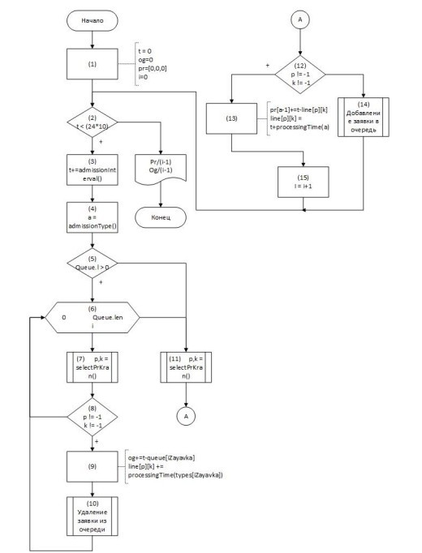
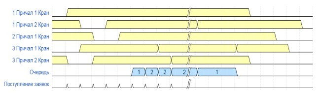

Барабанщиков О.Е., Савкова Е.О. Использование имитационного моделирования для формализации задач принятия решений. В статье предложено использование имитационного моделирования для формализации многокритериальной задачи принятия решения о развитии предприятия на реальном примере. При этом процесс функционирования предприятия представлен в виде системы массового обслуживания. В качестве каналов обслуживания рассматриваются варианты размещения разного количества оборудования, а помощью моделирующего алгоритма получены оценки этих вариантов по двум критериям.
ИМИТАЦИОННОЕ МОДЕЛИРОВАНИЕ, СИСТЕМА МАССОВОГО ОБСЛУЖИВАНИЯ, МНОГОКРИТЕРИАЛЬНАЯ ЗАДАЧА, ПРИНЯТИЕ РЕШЕНИЙ, ФОРМАЛИЗАЦИЯ ЗАДАЧ
Barabanschikov O.E., Savkova E.O.
«Donetsk National Technical University», Donetsk, Russian Federation
Barabanschikov O.E., Savkova E.O. Using simulation modeling to formalize decision making tasks. The article proposes the use of simulation modeling for the formalization a multi-criteria task of making a decision on the development of an enterprise using a real example. At the same time, the enterprise operation process is represented as a queuing system. As service channels, the placement different amounts of equipment is considered, and using the modeling algorithm, estimates of these options are obtained by two criteria.
simulation modeling, queuing system, multi-criteria task, decision making, task formalization.
При модернизации и расширении производства, обновлении и замене оборудования, внедрении новых технологий руководителю предприятия приходится принимать решение о целесообразности таких действий. Под целесообразностью действий понимается их оценка по различным параметрам, таким как минимальные затраты, максимальная прибыль, повышение качества обслуживания или выпускаемой продукции, улучшение условий труда, снижение трудоемкости работ и т.п.
Подобные задачи имеют следующую характерную особенность:
Имитационное моделирование основано на воспроизведении с помощью компьютера развернутого во времени процесса функционирования системы с учетом взаимодействия с внешней средой. Области применения методов имитации чрезвычайно широки и разнообразны. В разрезе данной статьи будет рассматриваться использование имитационного моделирования к проблеме формализации задач принятия решений [1], а именно получения оценочных показателей различных вариантов действий (альтернатив). При этом функционирование предприятия представляется в виде системы массового обслуживания (СМО).
СМО – класс математических схем, разработанных в теории массового обслуживания и различных приложениях для формализации процессов функционирования систем, которые по своей сути являются процессами обслуживания [2]. Основными элементами СМО являются входной поток заявок, входной поток обслуживаний, очереди заявок, ожидающих обслуживания, каналы обслуживания и выходной поток обслуженных заявок и заявок, которым по тем или иным причинам в обслуживании отказано. Характерным для работы таких систем является случайное появление заявок на обслуживание и завершение обслуживания в случайные моменты времени, то есть стохастический характер их функционирования. Таким образом, в любом элементарном акте обслуживания можно выделить две основные составляющие: ожидание обслуживания заявкой и само обслуживание заявки.
В результате возникает проблема составления алгоритмов на машине с последовательной обработкой таких процессов, которая состоит в том, что при моделировании необходимо отслеживать множество моментов, которые в реальном времени происходят параллельно. При реализации программы на компьютере процессор выполняет определённую последовательность операций, имитируя функционирование системы во времени. Одновременно с этим накапливаются и обрабатываются численные характеристики процесса, которые в дальнейшем будут использованы для оценки качества работы системы.
Рассмотрим решение реальной задачи размещения оборудования в условиях морского порта.
В морском порту имеется 3 причала, на каждом из которых могут работать несколько грузовых кранов. Эти грузовые краны выполняют как разгрузочные, так и погрузочные работы.
В порт через промежутки времени τ, имеющие равномерный закон распределения с m=2 часа и σ=0,5 часа, прибывают корабли 3-х типов с вероятностями 0.2; 0.3; 0.5.
Корабли 1 типа могут разгружаться и загружаться на всех 3-х причалах.
Корабли 2 типа - на 1 или 2 причалах
Корабли 3-го типа только разгружаются и только на 3 причале.
Время разгрузки или погрузки кораблей одним краном подчиняется нормальному закону с параметрами: m1=10 ч, σ1=3 ч; m2=15 ч, σ2=5 ч; m3=20 ч, σ3=6 ч.
Определить, сколько необходимо поставить кранов на каждом причале, чтобы корабли не ждали разгрузки более 3 часов. Статистику следует собрать за 10 дней работы порта. Корабли, которые к данному моменту не были обслужены, можно не учитывать.
Критериями для определения оптимального количества кранов на каждом причале являются минимальная стоимость и минимальное время ожидания обслуживания.
В результате получена многокритериальная задача принятия решения, где альтернативой является количество кранов, устанавливаемых на каждом причале. Матрица полезностей такой задачи может быть получена с помощью моделирующего алгоритма системы разгрузки и погрузки кораблей в порту.
Основной моделирующий алгоритм использует метод особых состояний [3] и изображен на рисунке 1.

В начале алгоритма выполняется инициализация массива времени освобождений каналов pr, текущего времени t, количества обслуженных кораблей i и общего времени ожидания обслуживания (блок 1). В блоке 2 организуется цикл 10 дневной обработки заявок. В теле цикла увеличивается текущее время на время поступления заявки (блок 3), определяется тип прибывшего судна (блок 4), после чего в блоке 5 анализируется очередь кораблей. Если очередь не пустая, то проверяется возможность обслуживания судна из очереди, для этого в цикле 6 перебираются заявки в очереди, определяется свободный канал (блок 7). Если тип корабля соответствует типу канала, то судно обслуживается (блок 9) и удаляется из очереди (блок 10). Аналогичные действия выполняются, для только что пришедшей заявки, т.е. проверяется возможность ее обслуживания (блоки 11 и 12), заявка обслуживается (блок 13) по исходу «да» блока 12, или добавляется в очередь (блок 14), и счетчик кораблей увеличивается на 1 (блок 15). В процессе моделирования для большей наглядности можно организовать вывод промежуточных значений.
Результаты моделирования представлены диаграммами использования каналов и постановки заявок в очередь. Каждая вертикальная линия – некоторый момент времени, а двойная вертикальная – единица времени, после которой корабли больше не поступают, а обслуживаются те, что остались в очереди. Числовые обозначения на шкале очереди – количество кораблей, ожидающих обслуживание. Также следует заметить, что на графике отображено окончание моделирования, поэтому имеются занятые каналы в начале временной шкалы. График отображающий процесс загрузки каналов изображен на рисунке 2.

Для уменьшения размера диаграммы было использовано всего 5 кранов на трех причалах.
Разработанный алгоритм был использован для моделирования системы с различным количеством кранов на причалах с целью определения их оптимального количества, при этом критериями отбора вычисляемые системой параметры: среднее время ожидания обслуживания, т.е. простой заявок. Если время простоя превышает 3 часа, то такой вариант расстановки кранов на причалах (альтернатива) не рассматривается и исключается из перечня альтернатив. Стоимость устанавливаемых кранов рассчитывается по формуле:
∑i=13 CiKi
где С – стоимость крана на i-том причале;
К – количество кранов на причале.
В формуле учитывается, что на каждом причале устанавливаются краны разного типа. При расчетах использовались следующие данные:
С1 = 2,2 млн.руб; С2 = 2,7 млн.руб; С3 = 3,1 млн.руб;
Результаты моделирования были сведены в таблицу:
| Альтернатива | Количество кранов на причалах | Стоимость кранов, млн. руб | Среднее время простоя кораблей на причалах, час |
|---|---|---|---|
| А1 | 2-2-6 | 28,4 | 1,05-1,08-1,16 |
| А2 | 2-1-7 | 28,8 | 0,97-0,51-2,02 |
| А3 | 2-2-7 | 31,5 | 1,42-1,31-2,75 |
| А4 | 3-1-6 | 27,9 | 1,08-1,22-1,29 |
| А5 | 3-1-7 | 31,0 | 1,56-2,27-3,63 |
| А6 | 1-3-7 | 32,0 | 1,36-1,12-3,16 |
А1 – 2 крана на первом причале, 2 крана на втором причале и 6 кранов на третьем причале;
А2 – 2 крана на первом причале, 1 крана на втором причале и 7 кранов на третьем причале;
А3 – 2 крана на первом причале, 2 крана на втором причале и 7 кранов на третьем причале;
А4 – 3 крана на первом причале, 1 крана на втором причале и 6 кранов на третьем причале;
А5 – 3 крана на первом причале, 1 крана на втором причале и 7 кранов на третьем причале;
А6 – 1 крана на первом причале, 3 крана на втором причале и 7 кранов на третьем причале;
Альтернативы А3, А5 и А6 являются доминируемыми и могут быть отброшены.
Для окончательного выбора оптимального варианта размещения кранов на причалах применялись различные методы решения многокритериальных задач: метод главного критерия, методы свертки, метод целевого программирования, метод уступок, метод гарантированного результата [4]. Результат четырех методов одинаковый – оптимальным вариантом расстановки кранов на причалах для эффективного обеспечения работы порта является альтернатива А2. Окончательный результат должен приниматься ответственным лицом.
В рамках данной статьи рассмотрен пример оценки альтернативных решений многокритериальной задачи с помощью представления процесса функционирования предприятия в виде системы массового обслуживания и разработки алгоритма, моделирующего работу такой системы. Показана целесообразность такого подхода, давшего возможность рассчитать матрицу полезности с дальнейшим использованием различных методов решения многокритериальных задач для выбора эффективного варианта действий.